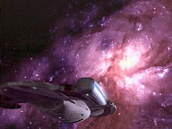
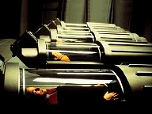
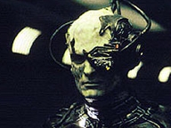
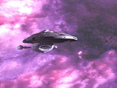
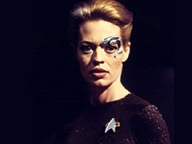
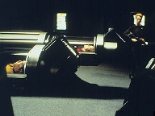
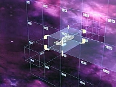

| MANCHETE
DO EPISDIO
Seven
sente os efeitos do isolamento
Episdio
anterior | Prximo episdio Sinopse:
Data Estelar: 51929.3 
medida que a Voyager se aproxima de uma vasta nebulosa, a tripulao comea a
ser severamente afetada por uma radiao. Todos, exceto Seven e o Doutor. A
nuvem to grande que levaria um ano para contorn-la e um ms para
atravess-la. Seguindo a sugesto do mdico, Janeway decide que a melhor
opo colocar os tripulantes em cmaras de estasse e cortar caminho. Seven
e o Doutor permanecero conscientes e ficaro responsveis por manter os
sistemas da nave e checar os sinais vitais dos colegas durante a travessia.
Depois de alguns dias, a falta de interao social e
atividade a bordo comea a mexer com a dupla. Ambos ficam cada vez mais tensos
e irritadios. Para piorar a situao, no meio do percurso o computador
alerta que os tanques de anti-matria esto falhando e o plasma est vazando.
Seven corre para a Engenharia para ejetar os tanques, mas, ao chegar, v que
foi alarme falso. O computador comea a funcionar mal e os sensores passam a
captar leituras falsas. Aparentemente, a nebulosa agride tambm
tecnologia.
 Enquanto Seven e o Doutor conduzem os reparos, o programa
dele comea a desestabilizar. A dupla consegue correr para a Enfermaria, porm
o emissor mvel do mdico pifa. Agora, Seven ter que percorrer a nave
sozinha. Ainda mais isolada, ela comea a ter sonhos e vises perturbadoras.
Quando um aliengena abre contato com a Voyager, Seven o transporta a bordo e
concorda em negociar suprimentos. Mas os comentrios imprprios do visitante a
fazem se sentir ameaada. Ela decide escolt-lo fora, mas, ao virar o rosto
por um instante, o aliengena corre pelo corredor e desaparece.
Embora os sensores no acusem a presena de intrusos ou
mesmo de uma nave nas proximidades, Seven inicia uma busca pela Voyager. Ouve
vozes de tripulantes a chamando e a do aliengena, que parece controlar os
sistemas da nave. Quando o Doutor finalmente conserta seu emissor mvel, corre
para ver a colega e descobre que ela est alucinando. Conclui que a radiao
passou a afetar tambm seus implantes Borgs, mas, antes que possa fazer algo a
respeito, os condutes EPS sobrecarregam e o programa do mdico desativado.
Seven agora est realmente sozinha. Com o destino de toda a tripulao em
suas mos, entra em pnico.  Faltando apenas 17
horas at que a Voyager deixe a nebulosa, os sistemas de propulso comeam a
falhar. Seven enfrenta seus medos, luta contra as alucinaes e procura
desviar energia para os motores da nave. A cada passo pelos corredores,
depara-se com seus medos. Em certo momento, um Borg a persegue, dizendo que ela
nunca sobreviver como indivduo. Depois, v os colegas provocando-a e
fazendo insinuaes desanimadoras. Nos ltimos minutos, Seven desliga o
suporte de vida para dar potncia propulso. Em seguida, cai desacordada.
Ao abrir os olhos, est na Enfermaria. Janeway lhe diz que a Voyager saiu da
nebulosa e que todos esto bem.
Comentrios:
"One" um bom episdio pela mensagem
que pretende passar, mas sofre de problemas na sua execuo. Novamente, a
estrela da vez Seven. No que isso seja ruim (para ela), pois o
desenvolvimento tem sido consistente. Contudo, esse excesso de atenes na sexy
Borg - em detrimento dos demais personagens - levou muita gente a rebatizar a
srie como "Jornada nas Estrelas: Seven of Nine" - e
com razo. Debate-se no segmento da semana a dificuldade da ex-zango em lidar com sua
individualidade em situao de isolamento.
 medida que a Voyager se aproxima de uma nebulosa
gigante, a tripulao comea a sentir efeitos letais. uma premissa
simplista? Sim, mas vlida, pois no se recorre tecnobaboseira. s vezes
preciso criar uma certa aura de mistrio. Aqui, o mecanismo funciona bem.
S no d para entender por que Janeway no mandou escanear a nuvem antes
de jogar a nave nela, o que custou a vida de um tripulante. Sobre este ponto,
preciso fazer uma importante considerao. At agora, tem sido muito difcil entender a forma como a tripulao da Voyager
encara a morte
de um colega. Eles no demonstram qualquer reao. Imagine se voc
estivesse a 60.000 anos-luz de casa, confinado em uma pequena nave com 150
tripulantes. Em quatro anos, no teria ligaes outras que no
profissionais com eles? No seriam eles seus amigos? E, mesmo que no
fossem, no ficaria preocupado com a escassez de mo-de-obra? Tudo isso
parece crtica barata. Mas no . Nessas ocasies, a srie trai os
aspectos mais fundamentais de sua premissa. E se tem algo de que Jornada
pode se orgulhar, da sua fidelidade e ateno aos detalhes, que tornam
tudo mais crvel.
Enfim, o problema dos oficiais com a nebulosa que ela
se expande a centenas de anos-luz. Contorn-la seria invivel, pois o
comprimento ainda maior. Quem so os dois nicos a bordo imunes aos
efeitos? O Doutor e Seven of Nine, protegida pela tecnologia Borg de seu
corpo. Janeway decide colocar todo mundo em estasse e deixar a
responsabilidade de controlar a nave com a dupla. Aqui, vem tona uma
questo levantada no jurssico "The 37's",
da segunda temporada: Chakotay no deixara claro que a Voyager no pode ser
operada com menos de 75 tripulantes? Pois ...
 A cena em que o comandante expressa sua
preocupao a Janeway na sala de conferncias merece destaque. A capit diz
que no sabe explicar a natureza de sua confiana na ex-Borg - que um dia
ameaou a todos de assimilao e ainda comporta-se de modo insolente e
imprevisvel. Ao telespectador j est claro desde "The
Gift" que h um elo muito forte entre as duas. Ela prpria
enfrenta dvidas, mas baseia sua deciso no palpite de que Seven lhes quer o
bem. A conversa convence a Chakotay e ao f. Muito boa a seqncia.
A partir do momento em que a tripulao
fica inconsciente, a histria se restringe a Seven e o Doutor. Logo surge a
questo: a ex-Borg, que mostrava dificuldades em lidar com apenas 150 humanos,
conseguir sobreviver tendo apenas o Doutor como companhia? E quando os
sistemas da nave - inclusive o mdico hologrfico - comearem a falhar? Como
ser? Por natureza, o ser humano social. Para os Borgs, a solido um
conceito aliengena. Agora, Seven tem de lidar com a realidade de ser o nico
indivduo na nave e descobre que no est preparada para isso.
 O isolamento amedronta, incapacita. E Ryan consegue
transmitir bem o pnico de sua personagem. No quesito atuao, o
telespectador est bem servido. Os problemas com "One", na
verdade, so as alucinaes de Seven. Elas no funcionam. Talvez, apenas o
Borg assustador nos corredores da nave. Mas as cenas com a tripulao so
risveis. Parece roteiro de histria infantil. E o aliengena dispensvel. Embora os roteiristas quisessem provocar um twist, eles
irritaram o f, que achou se tratar de um visitante real.
O mrito do episdio o confronto entre o passado e o
presente de Seven. A personagem nota que a coletividade dos Borgs no mais lhe
conforta e que tornou-se socialmente dependente dos colegas, muito embora esteja
em pleno processo de reivindicao de sua individualidade humana. Com a
experincia traumtica, finalmente compreende a necessidade e os benefcios
da vida em comunidade. No se trata de reter informaes relevantes, mas de
expressar sentimentos e pensamentos, outrora descartados como triviais. Nesse
sentido, significativa a deciso de sacrificar a prpria vida para salvar a
todos os outros. Seven d vazo a seu lado emocional.
 O furo no roteiro da semana a insistncia de Tom Paris
em deixar a cmara de estasse. Em primeiro lugar, porque a sbita
claustrofobia do tenente contrasta com todas as caractersticas de sua
personalidade estabelecidas desde a primeira temporada. Paris piloto -
inclusive das confinadas naves auxiliares -, gosta de aventura, esportes
radicais e j at foi visto preso em cavernas ("Parturitions",
"Blood Fever"). Sem contar as diversas
vezes em que usou o traje espacial. Inconsistente. Depois, h de se questionar
como que ele no foi afetado pela nebulosa ao sair de sua cmara, sobretudo
porque no prprio episdio foi dito que, se ela fosse desligada, o
ocupante morreria.
Relevando esses detalhes e focando a premissa maior, "One"
continua a tarefa de estabelecer Seven como personagem legtima de Voyager
e contribui para torn-la mais interessante. timo. O problema, novamente,
que tudo se restrige a essa busca pela individualidade dela. O resto do elenco
fica a ver navios. Faltam ao seriado mais desafios, mais arcos de histrias que
integrem todos, falta que se criem conflitos. Toda essa potencialidade ter de
ser trabalhada na temporada seguinte.
Citaes:
Seven - "I believe I am overdue for
my weekly medical maintenance. We should go."
("Acredito que estou atrasada para a minha manuteno mdica semanal.")
Doutor - "Seven, you've never volunteered for a check-up before."
("Seven, voc nunca foi voluntariamente para um check-up antes.")
Seven - "It is preferable to remaining here."
(" prefervel a permanecer aqui.")
Janeway - "We've come fifteen thousand
light years. We haven't been stopped by temporal anomalies, warp core breeches,
or hostile aliens, and I am damned if I'm going to be stopped by a nebula."
("J percorremos quinze mil anos-luz. No fomos impedidos por anomalias
temporais, rupturas no ncleo do reator, ou aliengenas hostis. Vou ficar furiosa se for impedida por uma nebulosa.")
Janeway - "I want you to
understand the seriousness of this responsibility. The lives of the entire
crew will be on your shoulders."
("Quero que entenda a seriedade dessa responsabilidade. As vidas de toda a
tripulao estaro nas suas mos.")
Seven - "You doubt my ability to fulfil this task?"
("A senhora duvida da minha habilidade em cumprir com essa tarefa?")
Janeway - "Ordinarily not at all. But this is an unusual situation.
After being in the Collective, it wasn't easy for you to adjust to a ship with
only a 150 people on it, was it, Seven? How would you feel with only the
Doctor for company?"
("Normalmente, de jeito nenhum. Mas esta uma situao incomum. Depois
de estar na Coletividade, no foi fcil para voc se ajustar a uma nave com
apenas 150 pessoas, foi, Seven? Como se sentiria apenas com o Doutor como
companhia?")
Seven - "I will adapt."
("Vou me adaptar.")
Chakotay - "I want you to tell me that
this isn't a mistake."
("Quero que me diga que isso no um erro.")
Janeway - "Your turn to get reassurance?"
("Sua vez de receber uma reafirmao?")
Chakotay - "Maybe. But my concern isn't about going into stasis. It's
about who you're leaving in charge."
("Talvez. Mas a minha preocupao no entrar em estasse. sobre
quem deixaremos no comando.")
Janeway - "You're worried about Seven."
(""Est preocupado com a Seven.)
Chakotay - "Maybe you need to step outside yourself for a minute. Look
at the fact that here's someone who's butted horns with you from the moment
she came on board, who disregards authority and actively disobeys orders when
she doesn't agree with them."
("Talvez deva olhar por outra perspectiva por um minuto. Ver o fato de que
ela algum que discute com voc desde que veio a bordo, desrespeita
autoridade e ativamente desobedece ordens quando no concorda com elas.")
Janeway - "And this is the person I'm giving responsibility for the
lives of this entire crew. I suppose you want me to tell you I'm not crazy."
("E essa pessoa a quem estou deixando a responsabilidade pelas vidas de
toda a tripulao. Suponho que queira que eu diga que no sou louca.")
Chakotay - "In a nutshell... I know your bond with Seven is unique,
different from everyone else's. From the beginning, you've seen things in her
that no one else could. But maybe you could help me understand some of those
things."
("Resumidamente... Eu sei que sua ligao com Seven nica, diferente
da de todos os outros. Desde o comeo, voc viu coisas nela que ningum
mais conseguia. Mas pode me ajudar a entender algumas dessas coisas.")
Janeway - "I don't know if I can. It's just instinct. There's
something inside me that says she can be redeemed. In spite of her insolent
attitude, I honestly believe she wants to do well by us."
("No sei se posso. apenas instinto. H algo dentro de mim que diz que
ela pode ser redimida. Apesar da atitude insolente, eu honestamente acredito
que ela nos quer bem.")
Chakotay - "That's good enough for me."
("Isso o bastante para mim.")
Paris - "What if we had to get out in a
hurry?"
("E se tivermos que sair na pressa?")
Janeway - "You can unlock the unit from inside, Tom."
("Voc pode destrancar a unidade por dentro, Tom.")
Doutor - "Do I detect a hint of claustrophobia, Lieutenant?"
("Estou detectando um trao de claustrofobia, tenente?")
Paris - "Why do they have to design these things like coffins?"
("Por que tm que projetar essas coisas como caixes?")
Kim - "Should we replicate you a teddy bear?"
("Acha bom replicarmos um ursinho de pelcia?")
Seven - "Holodecks are a pointless
endeavour, fulfilling some human need to fantasise. I have no such need."
("Os holodecks so um esforo intil, que preenche uma necessidade
humana de fantasiar. No tenho tal necessidade.")
Doutor - "If the mobile emitter goes
offline while I'm out of Sickbay, my program may be irretrievable!"
("Se o emissor mvel desativar enquanto eu estiver fora da Enfermaria, meu
programa pode ser irrecupervel!")
Seven - "Don't panic. It's counterproductive."
("No entre em pnico. contraproducente.")
Doutor - "That's easy for you to say. You're not facing cybernetic
oblivion."
(" fcil para voc falar. No voc que est enfrentando o
esquecimento ciberntico.")
Seven - "Doctor?"
("Doutor?")
Doutor - "If that happens again, I'm a goner. Ah! Home sweet Sickbay!
I never thought I'd be so glad to see these walls."
("Se isso acontecer de novo, eu j era. Ah! Lar doce Enfermaria! Nunca
achei que ficaria to feliz em ver estas paredes.")
Seven - "Once, when I was a drone, I
was separated from the Collective for two hours. I experienced panic and
apprehension. I am feeling that way now."
("Uma vez, quando eu era um zango, fui separada da Coletividade por duas
horas. Experimentei pnico e apreenso. Estou sentindo aquilo agora.")
Trivia:
 Wade Andrew
Williams foi Garos em "Civilization", de Enterprise.
Wade Andrew
Williams foi Garos em "Civilization", de Enterprise.
No final do episdio, quando Seven est no laboratrio de Astromtricas,
faltam 17 horas e 11 minutos para a Voyager deixar a nebulosa. A personagem
caminha, interage com suas alucinaes, v um cubo Borg e, quando chega na
Ponte, faltam apenas 41 minutos.
Ficha
tcnica: Direo de
Kenneth Biller
Escrito por Jeri Taylor
Exibido em 13/05/1998
Produo: 093 Elenco: Kate
Mulgrew como Kathryn Janeway
Robert Beltran como
Chakotay
Roxann Biggs-Dawson como B'Elanna Torres
Robert
Duncan McNeill como Tom Paris
Ethan Phillips como
Neelix
Robert Picardo como Doutor
Tim Russ
como Tuvok
Jeri Ryan como Seven of Nine
Garrett Wang como Harry Kim Elenco
convidado: Wade Andrew
Williams como Trajis Lo-Tarik
Episdio
anterior | Prximo episdio
|